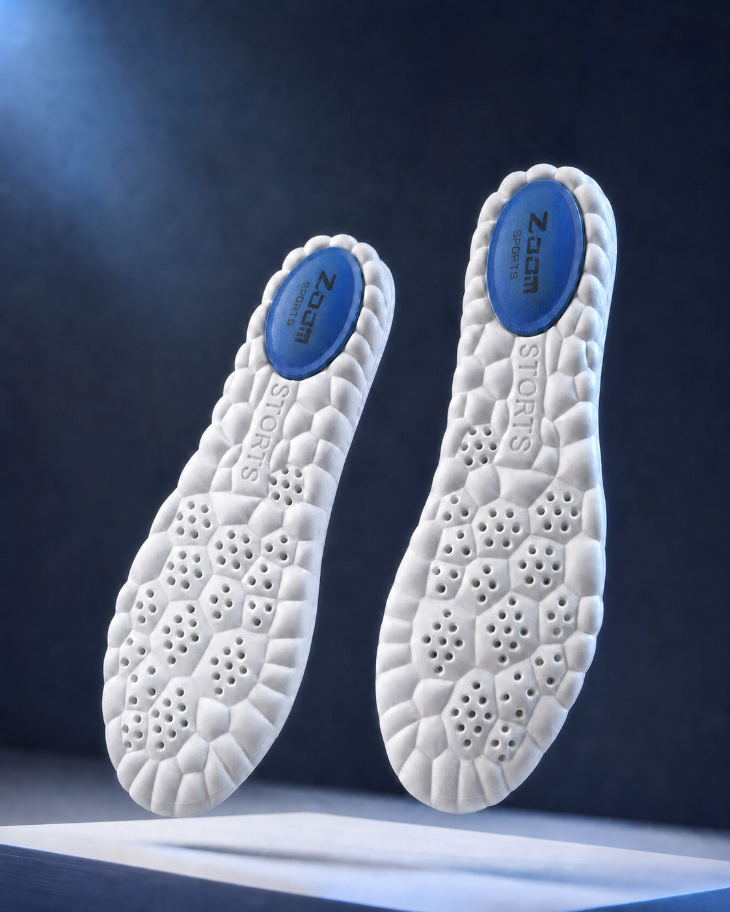
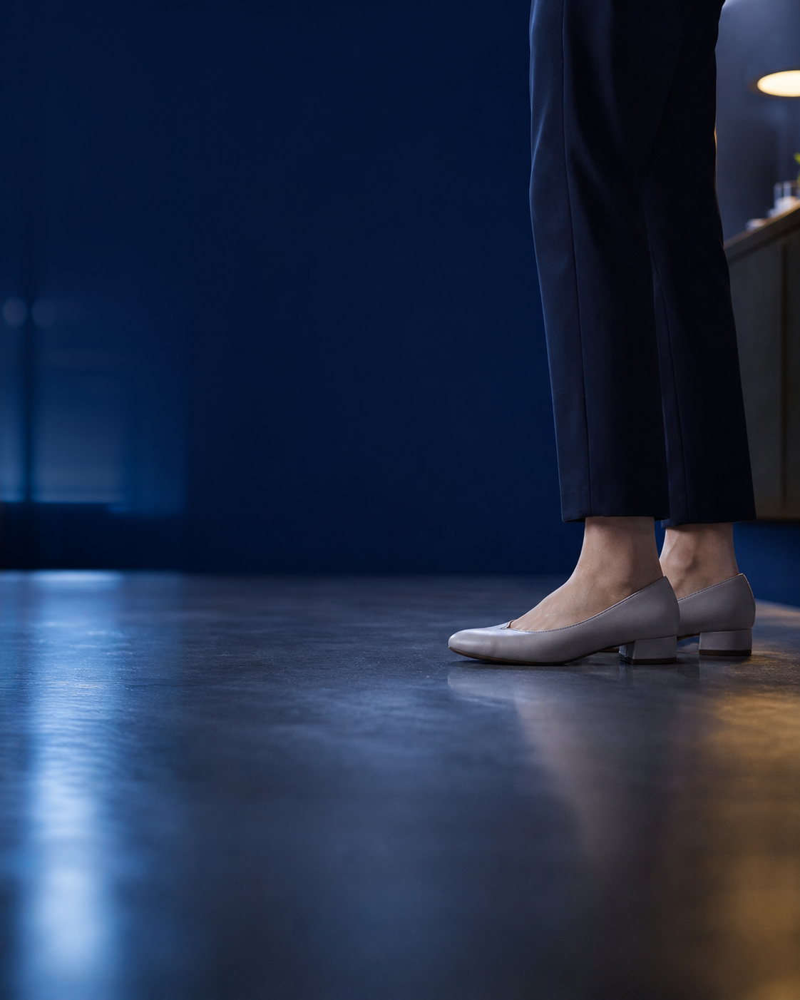
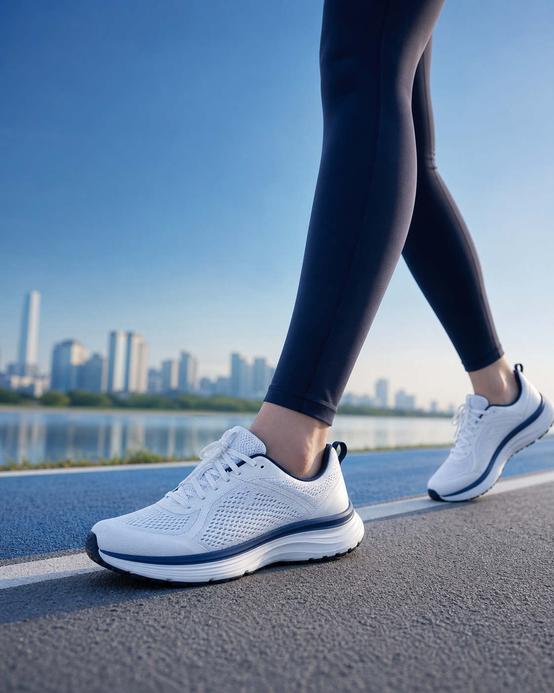
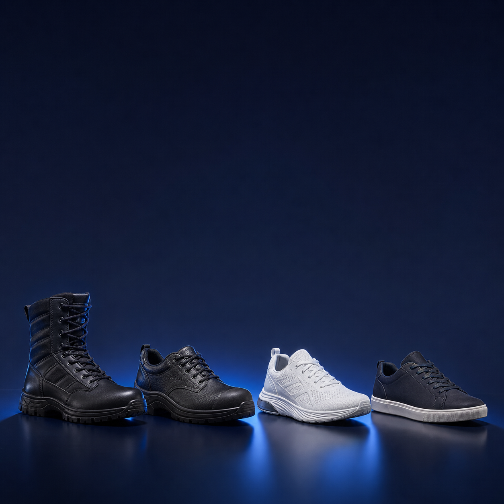
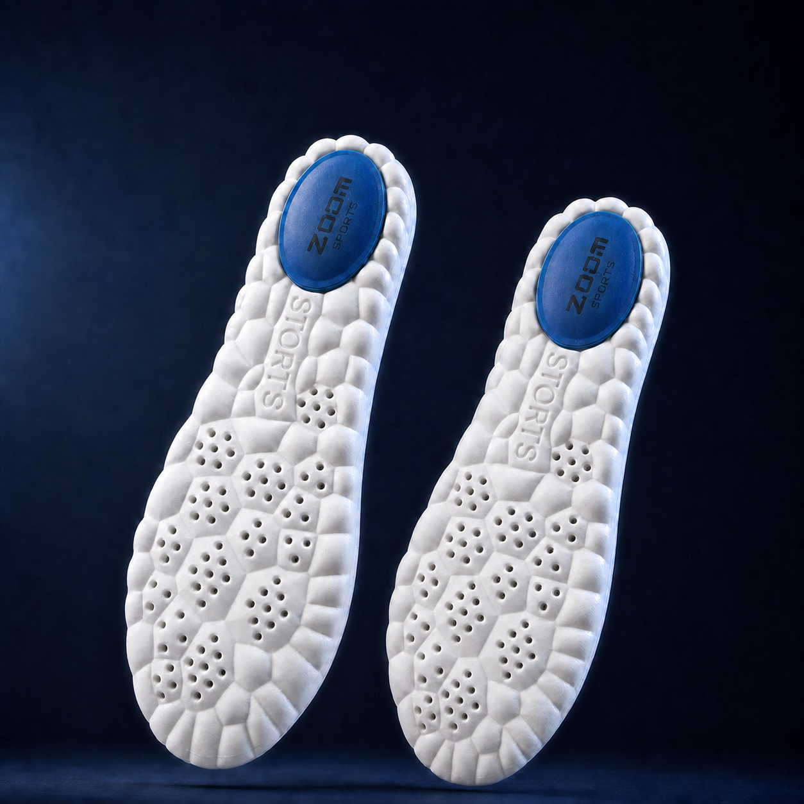

오래 신으면
발바닥이 쉽게 피곤하지 않을까?

NOVAFACE · 노바페이스
하루 종일 신는 신발, 바닥부터 가볍게
발편한
기능성깔창
포근하게 받쳐주는 입체 에어셀과
신발 속 공기 흐름을 고려한 통풍 설계
고탄성 PU
에어메시
230-280
발은 더 편안하게
신발 속은 덜 답답하게
깔창 하나를 고를 때도
궁금한 건 많으니까.
매일 신을수록 먼저 떠오르는 질문부터 살폈습니다.

신발 속이
답답하고 습해지지 않을까?
내 발길이에는
어떤 사이즈가 맞을까?
노바페이스가 답합니다
푹신함은 에어셀로,
답답함은 에어홀로.

두 가지 소재, 한 장에
발이 닿는 면은 부드럽게,
바닥은 탄탄하게.

에어메시 윗면
발이 닿는 면을 부드럽고 산뜻하게
고탄성 PU 아랫면
신발 바닥에 닿는 면을 유연하고 탄탄하게

02
AIR FLOW
앞꿈치부터 중간까지,촘촘하게 이어진 에어홀.
에어메시와 다수의 에어홀로
신발 속 공기 흐름을 고려했습니다.
03
AIR CELL STRUCTURE
발바닥 전체에는 입체 에어셀.
바닥 하단에 도톰한 다각형 셀 구조가 이어집니다.

04
HEEL CUSHION
뒤꿈치 중심에
더한 블루쿠션.
뒤꿈치가 닿는 위치에 파란 쿠션 포인트를 한 겹 더했습니다.
BLUE CUSHION


05
FLEXIBLE
움직임을 따라
유연하게.
부드럽게 휘어지는 PU 구조가 발의 움직임을 자연스럽게 따라갑니다.
06
3D ARCH CONTOUR
뒤꿈치부터 안쪽 아치까지,받쳐주는 구조.
올라온 뒤꿈치 둘레와 안쪽 아치 굴곡이 발 아래 곡선을 따라 한 흐름으로 이어집니다.

재단할 필요 없이
발길이에 맞춰 고르는
6가지 사이즈.
230부터 280까지 준비했습니다. 5mm 단위 발길이라면 한 단계 위 사이즈를 선택해 주세요.

이런 날 더 필요합니다
오래 서 있는 날도, 많이 걷는 날도
매일 신는 신발 속 편안함을 더하세요.
01
군화
단단한 바닥이 부담스러운 날
02
작업화
오래 서 있는 하루를 보낼 때

03
운동화
걷고 움직이는 시간이 길 때
04
일상화
얇은 기본 깔창이 아쉬울 때
사용은 간단하게
기존 깔창을 빼고,
뒤꿈치부터 쏙.

사용 장면으로 보는 선택 이유
매일 신는 신발에,
원하던 세 가지.
오래 서 있는 날에도
발바닥을 포근하게 받쳐줘요.
에어홀로 신발 속
답답함을 덜어줘요.
발길이에 맞춰 고르니
사이즈 선택이 쉬워요.
좌우 한 세트
ZOOM SPORTS노바페이스
발편한 기능성깔창.
한 켤레로 시작하는 발 아래의 작은 변화

PRODUCT INFORMATION
구매 전 한 번 더 확인하세요.
- 제품명
- 노바페이스 발편한 기능성깔창
- 재질
- 고탄성 PU, 에어메시천
- 사이즈(mm)
- 230 / 240 / 250 / 260 / 270 / 280
- 구성
- 좌우 한 켤레
- 제조국
- 중국 OEM
FAQ
자주 묻는 질문.
255mm는 어떤 사이즈를 고르면 되나요?
5mm 단위 발길이는 한 단계 위인 260mm를 선택해 주세요.
신발에 바로 넣어도 되나요?
신발 안쪽 공간을 확인한 뒤 기존 깔창을 빼고 넣어 주세요.
어떤 신발에 사용할 수 있나요?
군화, 작업화, 운동화 등 깔창을 교체할 수 있는 신발에 사용할 수 있습니다.
에어홀은 어디에 있나요?
앞꿈치부터 중간 부위까지 다수의 원형 에어홀이 이어져 있습니다.
발 아래 한 켤레의 작은 변화
매일 신는 신발에,
한결 편안한 걸음을.



NOVAFACE
발 아래 한 장으로,
하루를 더 편안하게.
노바페이스 발편한 기능성깔창
230-280mm / 좌우 한 세트